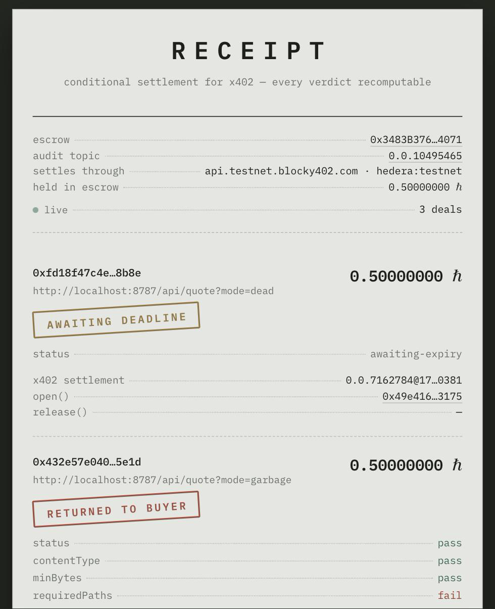

<!doctype html>
<html lang="en">
<head>
<meta charset="utf-8">
<title>Receipt — demo</title>
<link rel="preconnect" href="https://fonts.googleapis.com">
<link rel="preconnect" href="https://fonts.gstatic.com" crossorigin>
<link href="https://fonts.googleapis.com/css2?family=IBM+Plex+Mono:wght@400;500;600&display=swap" rel="stylesheet">
<style>
  :root{
    --paper:#e4e6e1; --ink:#1c1f1a; --faded:#6b7268; --rule:#b9beb6;
    --held:#8a6a2f; --paid:#2f6b4f; --returned:#9b3b2f;
    --term-bg:#171a15; --term-fg:#d7dbd2;
  }
  *{box-sizing:border-box; margin:0; padding:0}
  html,body{height:100%; overflow:hidden}
  body{
    background:var(--paper); color:var(--ink);
    font:400 17px/1.5 "IBM Plex Mono", ui-monospace, Menlo, monospace;
    -webkit-font-smoothing:antialiased;
  }
  #stage{position:relative; width:100vw; height:100vh}
  .slide{
    position:absolute; inset:0; padding:64px 78px 72px;
    display:none; flex-direction:column; justify-content:center;
  }
  .slide.on{display:flex}
  .slide.dark{background:var(--term-bg); color:var(--term-fg)}

  h1{font-size:76px; font-weight:600; letter-spacing:.30em; text-indent:.30em; line-height:1}
  h2{font-size:40px; font-weight:600; line-height:1.18; max-width:22ch}
  h2.wide{max-width:34ch}
  .kicker{color:var(--faded); font-size:17px; margin-bottom:22px}
  .sub{color:var(--faded); font-size:21px; margin-top:20px; max-width:60ch}
  .big{font-size:56px; font-weight:600}

  ul{list-style:none; margin-top:30px; display:grid; gap:13px; max-width:74ch}
  li{display:flex; gap:14px; font-size:20px; align-items:baseline}
  li .m{color:var(--faded); flex:0 0 auto}
  .punch{margin-top:34px; font-size:27px; font-weight:600; color:var(--returned)}

  .stamp{
    display:inline-block; padding:8px 20px 7px; border:3px solid currentColor; border-radius:3px;
    font-size:25px; font-weight:600; letter-spacing:.15em; text-indent:.15em;
    text-transform:uppercase; transform:rotate(-3deg);
  }
  .stamp.paid{color:var(--paid)} .stamp.returned{color:var(--returned)} .stamp.held{color:var(--held)}

  /* terminal */
  .term{font-size:17.5px; line-height:1.62; white-space:pre-wrap; word-break:break-word}
  .term .dim{color:#77806f} .term .g{color:#7dc490} .term .r{color:#e08b7d}
  .term .y{color:#d9b36c} .term .w{color:#fff; font-weight:500}
  .term .match{color:#8ede9f; font-weight:600; font-size:20px}
  .term .expired{color:#e6c47a; font-weight:600; font-size:20px}
  .term-title{color:#77806f; font-size:16px; margin-bottom:16px}
  .cursor{display:inline-block; width:9px; height:19px; background:var(--term-fg); vertical-align:-3px; animation:blink 1s steps(1) infinite}
  @keyframes blink{50%{opacity:0}}

  /* arch diagram */
  .arch{display:grid; gap:12px; margin-top:26px; font-size:18px; max-width:80ch}
  .arch .box{border:1.5px solid var(--rule); padding:11px 16px; background:#0000000a}
  .arch .box.hot{border-color:var(--held); background:#8a6a2f14}
  .arch .arrow{color:var(--faded); padding-left:22px}

  /* bounty table */
  table{border-collapse:collapse; margin-top:26px; font-size:17.5px; width:100%}
  th,td{text-align:left; padding:11px 14px; border-bottom:1px solid var(--rule); vertical-align:top}
  th{color:var(--faded); font-weight:400; font-size:15.5px}
  td.who{font-weight:600; white-space:nowrap}
  td.ev{color:var(--faded); font-size:15.5px}
  .yes{color:var(--paid)} .no{color:var(--returned)}

  /* progress */
  #bar{position:absolute; left:0; bottom:0; height:3px; background:var(--held); width:0; transition:width .25s linear; z-index:5}
  #label{position:absolute; right:22px; bottom:14px; font-size:13px; color:var(--faded); z-index:5}
  .slide.dark ~ #label{color:#5d6657}

  .fade{animation:fade .45s ease both}
  @keyframes fade{from{opacity:0; transform:translateY(7px)}to{opacity:1; transform:none}}
</style>
</head>
<body>
<script src="demo-data.js"></script>
<div id="stage"></div>
<div id="bar"></div>
<div id="label"></div>

<script>
// Real output, captured from a live run against Hedera testnet.
const DATA = window.DEMO_DATA || {};

const esc = (s) => String(s ?? '').replace(/[&<>]/g, c => ({'&':'&amp;','<':'&lt;','>':'&gt;'}[c]));

// paint a captured transcript with a little colour so the eye lands in the right place
function paint(text){
  return esc(text)
    .replace(/^(.*\bverdict\s+pass.*)$/gm, '<span class="g w">$1</span>')
    .replace(/^(.*\bverdict\s+fail.*)$/gm, '<span class="r w">$1</span>')
    .replace(/\bMATCH\b/g, '<span class="match">MATCH</span>')
    .replace(/\bEXPIRED\b/g, '<span class="expired">EXPIRED</span>')
    .replace(/\b(pass)\b/g, '<span class="g">$1</span>')
    .replace(/\b(fail)\b/g, '<span class="r">$1</span>')
    .replace(/(-0\.50000000 ℏ)/g, '<span class="y">$1</span>')
    .replace(/(0\.00000000 ℏ)/g, '<span class="g w">$1</span>')
    .replace(/(\+?0\.50000000 ℏ)/g, '<span class="g">$1</span>')
    .replace(/^(\s*[a-zA-Z0-9_()\/ -]{3,26})(\s{2,})/gm, '<span class="dim">$1</span>$2');
}

const SLIDES = [
  { t: 6, dark:false, html: `
    <div class="fade" style="text-align:center">
      <h1>RECEIPT</h1>
      <p class="sub" style="margin:26px auto 0; max-width:52ch">Conditional settlement for x402. The money moves only if the response passes checks the buyer wrote.</p>
      <p style="margin-top:30px; color:var(--faded); font-size:16px">live on Hedera testnet · escrow verified on HashScan · every verdict recomputable</p>
    </div>`},

  { t: 19, dark:false, html: `
    <p class="kicker">the problem</p>
    <h2 class="wide">An agent pays. The API returns HTTP 200 and garbage. The money is gone.</h2>
    <ul>
      <li><span class="m">—</span><span>x402 has <strong>no refund primitive</strong>. There is no dispute step anywhere in the stack.</span></li>
      <li><span class="m">—</span><span>The median ticket is about <strong>$0.46</strong>. Kleros and UMA need bonds, liveness windows and gas — dollars and days.</span></li>
      <li><span class="m">—</span><span>Google AP2 and ERC-8004 stop at <strong>evidence</strong>. Both hand the remedy to whatever rail you are on.</span></li>
      <li><span class="m">—</span><span>The one shipped alternative uses an <strong>evaluator</strong>: 12M cumulative memos, and <strong>five unique senders a day</strong>.</span></li>
    </ul>
    <p class="punch">The evaluator is what broke it. Who judges? Who pays the judge?</p>`},

  { t: 18, dark:false, html: `
    <p class="kicker">the design</p>
    <h2>Receipt has no judge.</h2>
    <p class="sub">Every check is a pure function of (terms, response). Both parties can compute it. So can you.</p>
    <div class="arch">
      <div class="box">BUYER signs Terms with EIP-712 — the shape of token data it will pay for: real contract addresses, integer amounts, a fresh snapshot</div>
      <div class="arrow">↓ one URL change, one header</div>
      <div class="box hot">RECEIPT settles through Blocky402 → escrows on Hedera → calls the seller → adjudicates → releases or refunds</div>
      <div class="arrow">↓ terms + raw response + verdict</div>
      <div class="box">HEDERA CONSENSUS SERVICE — public, ordered, anyone can replay it</div>
    </div>`},

  { t: 24, dark:true, html: `
    <p class="term-title">scene 1 — buying live token data from The Graph · <span style="color:#d9b36c">pnpm buy honest</span></p>
    <div class="term" data-type="honest"></div>`},

  { t: 31, dark:true, html: `
    <p class="term-title">scene 2 — the seller returns HTTP 200 with a useless body · <span style="color:#d9b36c">pnpm buy garbage</span></p>
    <div class="term" data-type="garbage"></div>`},

  { t: 12, dark:false, html: `
    <div style="text-align:center">
      <p class="kicker">status 200. the status check passed.</p>
      <h2 class="wide" style="margin:0 auto">Nothing at the HTTP layer was wrong. The schema check caught it.</h2>
      <p class="big" style="margin-top:34px"><span class="yes">0.00000000 ℏ</span></p>
      <p class="sub" style="margin:12px auto 0">Refunded in seconds. No human, no evaluator, no dispute.</p>
      <p style="margin-top:26px"><span class="stamp returned">returned to buyer</span></p>
    </div>`},

  { t: 22, dark:true, html: `
    <p class="term-title">scene 3 — seller hangs, then an unrelated wallet recovers the funds · <span style="color:#d9b36c">pnpm claim</span></p>
    <div class="term" data-type="dead"></div>`},

  { t: 30, dark:true, html: `
    <p class="term-title">scene 4 — do not trust the adjudicator, re-run it yourself · <span style="color:#d9b36c">pnpm verify</span></p>
    <div class="term" data-type="verify"></div>`},

  { t: 12, dark:false, html: `
    <p class="kicker">the live ledger</p>
    <h2>Every deal, stamped and auditable.</h2>
    `},

  { t: 28, dark:false, html: `
    <p class="kicker">where each sponsor technology carries weight</p>
    <table>
      <tr><th>sponsor</th><th>what it does here</th><th>evidence</th></tr>
      <tr><td class="who">The Graph</td><td><strong>This is what is being bought.</strong> The seller sells live ERC-20 holdings from the Token API; the buyer's terms are written against that shape and the adjudicator decides payment by validating it. The purchase is a verifiable receipt for a Graph query.</td><td class="ev"><span class="yes">live</span> — 1349-byte response on HCS, re-checked offline</td></tr>
      <tr><td class="who">Hedera</td><td>Escrow holds real HBAR between payment and verdict. <strong>HCS carries terms, raw response and verdict</strong> — without it "re-run it yourself" is a slogan, not a command.</td><td class="ev"><span class="yes">live</span> — 0x3483…4071 · topic 0.0.10495465 · Sourcify full match</td></tr>
      <tr><td class="who">Blocky402</td><td>Performs every real payment. The buyer signs a <strong>partial</strong> transfer; Blocky402 adds the fee-payer signature and submits.</td><td class="ev"><span class="yes">live</span> — buyer pays 0 gas, fee payer 0.0.7162784</td></tr>
      <tr><td class="who">Bazantic</td><td>Gateway over the facilitator plus a Recipe chaining buy-and-verify into one MCP tool an agent can call.</td><td class="ev">gateway configured, recipe CI-validated — <span class="no">not yet published</span></td></tr>
      <tr><td class="who">Chainlink</td><td>Confidential Workflows is the named fix for the limitation below: evaluate inside the enclave, publish only the verdict.</td><td class="ev"><span class="no">not claimed</span> — private beta, gated</td></tr>
    </table>`},

  { t: 12, dark:false, html: `
    <p class="kicker">what we cannot prove, said out loud</p>
    <h2 class="wide">Latency is our own stopwatch. So it gates nothing.</h2>
    <p class="sub">The verdict splits in two. <strong>reproducible[]</strong> decides where the money goes and anyone can recompute it. <strong>attested[]</strong> is recorded, displayed, and decides nothing. Publishing the raw response is what makes verification real — and is wrong for a business selling data; a confidential enclave is the fix, and it is not built. The facilitator also custodies for one hop, both legs on the public log, and <code>open()</code> verifies the buyer's signature so it cannot alter the deal.</p>`},

  { t: 10, dark:false, html: `
    <div style="text-align:center">
      <h2 class="wide" style="margin:0 auto 26px">x402 has no refund primitive.</h2>
      <h2 class="wide" style="margin:0 auto 26px">The shipped alternative uses an evaluator, and runs at five senders a day.</h2>
      <h2 class="wide" style="margin:0 auto; color:var(--paid)">Receipt has no evaluator, because the verdict is a pure function anyone can recompute.</h2>
      <p style="margin-top:36px; color:var(--faded); font-size:17px">github.com/Thirumurugan7/Receipt</p>
    </div>`},
];

const stage = document.getElementById('stage');
const bar = document.getElementById('bar');
const label = document.getElementById('label');
const TOTAL = SLIDES.reduce((a, s) => a + s.t, 0);

SLIDES.forEach((s, i) => {
  const d = document.createElement('section');
  d.className = 'slide' + (s.dark ? ' dark' : '');
  d.innerHTML = s.html;
  d.dataset.i = i;
  stage.appendChild(d);
});

let elapsed = 0;
function show(i){
  [...stage.children].forEach((c, j) => c.classList.toggle('on', j === i));
  const slide = stage.children[i];
  const term = slide.querySelector('.term[data-type]');
  if (term) typeInto(term, DATA[term.dataset.type] ?? '(no capture)', SLIDES[i].t);
}

// Reveal a captured transcript line by line, paced to fit the slide's budget.
function typeInto(el, text, seconds){
  const lines = text.split('\n');
  el.innerHTML = '';
  const budget = Math.max(0.4, seconds - 3) * 1000;
  const per = Math.max(16, Math.min(90, budget / Math.max(1, lines.length)));
  let i = 0;
  (function step(){
    if (!el.isConnected || i >= lines.length) return;
    el.innerHTML = paint(lines.slice(0, ++i).join('\n')) + '<span class="cursor"></span>';
    setTimeout(step, per);
  })();
}

function run(){
  let i = 0;
  show(0);
  const tick = () => {
    elapsed += 0.1;
    bar.style.width = (elapsed / TOTAL * 100) + '%';
    const m = Math.floor(elapsed / 60), s = Math.floor(elapsed % 60);
    label.textContent = `${m}:${String(s).padStart(2,'0')} / ${Math.floor(TOTAL/60)}:${String(TOTAL%60).padStart(2,'0')}`;
    let acc = 0;
    for (let j = 0; j < SLIDES.length; j++){
      acc += SLIDES[j].t;
      if (elapsed < acc){ if (j !== i){ i = j; show(i); } break; }
    }
    if (elapsed >= TOTAL){ clearInterval(h); document.body.dataset.done = 'true'; return; }
  };
  const h = setInterval(tick, 100);
}
window.START = run;
window.TOTAL_SECONDS = TOTAL;
window.SLIDE_TIMES = SLIDES.map(s => s.t);

/**
 * Static render mode: #slide=N paints one slide fully, with any transcript
 * revealed in full rather than typed. Used to render frames offscreen so the
 * film can be assembled into a video without screen-recording anything.
 */
function renderStatic(i){
  [...stage.children].forEach((c, j) => c.classList.toggle('on', j === i));
  const slide = stage.children[i];
  const term = slide && slide.querySelector('.term[data-type]');
  if (term) term.innerHTML = paint(DATA[term.dataset.type] ?? '(no capture)');
  bar.style.width = (SLIDES.slice(0, i + 1).reduce((a, s) => a + s.t, 0) / TOTAL * 100) + '%';
  label.textContent = '';
  document.body.dataset.ready = 'true';
}
const m = location.hash.match(/slide=(\d+)/);
if (m) renderStatic(Number(m[1]));
else if (!location.hash.includes('manual')) setTimeout(run, 400);
</script>
</body>
</html>
